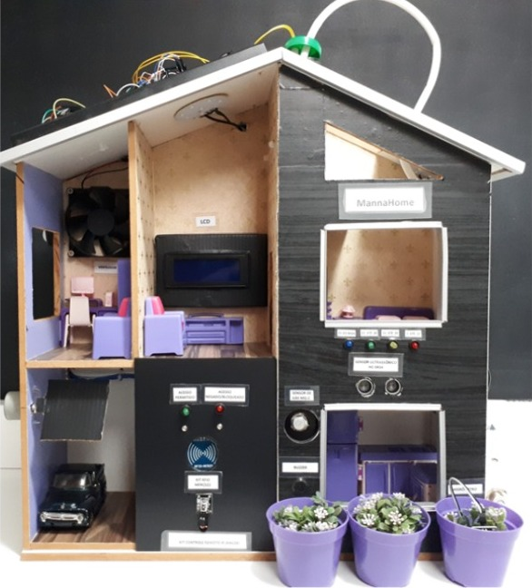

Conhecimento e Habilidades
Conhecimentos técnicos
Lógica de programação | Programação para Web | Programação de sistemas embarcados
Java | Python | Javascript | C | SQL | HTML | CSS
Django | Java Swing | Vue.js
Arduino | Esp32 | Esp8266 | Mindstorms EV3 | GitHub | VSCode
Habilidades pessoais
Adaptabilidade | Boa escrita | Colaboração | Comprometimento
Empatia | Cordialidade | Liderança | Organização
Paciência | Resiliência | Trabalho em equipe
Experiência profissional
• Instrutora de Informática no Centro Nacional Integrado de Cursos (CENAIC)
Setembro de 2022 - Atualmente
Atribuições: ensino de tópicos de informática básica (Windows, Internet, Word, Excel, PowerPoint,
Canva, lógica de programação).
• Instrutora de Robótica no Colégio Paroquial Nossa Senhora do Carmo
Abril de 2023 - Fevereiro de 2024
Atribuições: ensino de robótica para estudantes do Ensino Fundamental com o Kit Lego Mindstorms EV3.
• Agente Censitário Municipal no Instituto Brasileiro de Geografia e Estatística (IBGE)
Junho de 2022 - Outubro de 2022
Atribuições: gerenciamento e supervisão das atividades referentes ao Censo Demográfico de 2022 em
Tamboara - PR.
Histórico acadêmico
• Bacharelado em Engenharia de Software (2022 - Atualmente)
Instituto Federal do Paraná (IFPR) - Campus Paranavaí
• Técnico em Informática integrado ao Ensino Médio (2018 - 2021)
Instituto Federal do Paraná (IFPR) - Campus Paranavaí
Projetos em destaque

MannaHome
Trata-se de um protótipo de domótica produzido para a demonstração de
conceitos e aplicabilidades da Internet das Coisas, com o intuito de produzir um material
que viabilizasse a demonstração prática da IoT, com linguagem simples e acessível para
diferentes públicos.
Linguagens e tecnologias envolvidas: C; C++; sistemas embarcados Arduino, ESP32 e Esp8266.
Sistema de Loja Virtual
Projeto realizado nas disciplinas de Programação para Web e Projeto de Interfaces para Web do
Curso Técnico em Informática.
Linguagens e tecnologias envolvidas: Python; Django; HTML; CSS; Bootstrap.
Jogo de nave espacial 2D
Projeto realizado na disciplina de Programação Orientada a Objetos, que compõe a grade do 2º
ano do curso de Bacharelado em Engenharia de Software
Linguagens e tecnologias envolvidas: Java; Java Swing